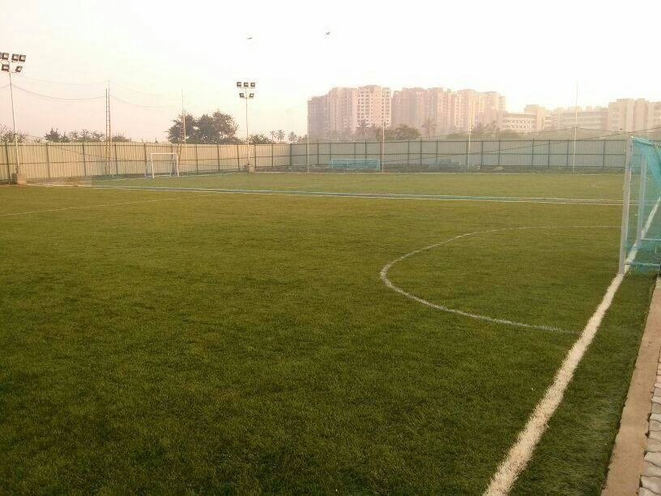

Iblitz Sport's Arena
- Astro turfs are popping up everywhere in the city and Indiranagar needed one. Bull Ring answered with a 5 a-side turf in the heart of the city.
- The “First of Firsts” to have a multi-coloured Football turf in Bangalore,
- The aesthetic ground spread out at the venue is open to 5/6/7 a-side football matches from 10 am to 11 pm.
- is sure to give to some adrenaline rush with their super-good Astro Turf promising high quality of play. The ground supports a game of 5 a-side.

 ASTROBOOK
ASTROBOOK